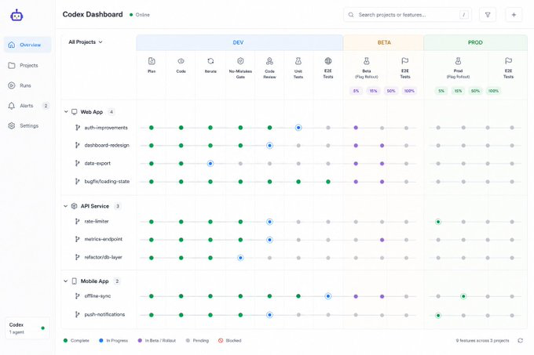

Supplied corrected visual reference
shot-reference

| Dimensions | 680 × 453 px |
|---|---|
| Source identity | local attachment anchored to local diff dd8a9488ff22ddcf5e6d6148670b531a13fdb452 |
| Source status | verified |
| SHA-256 | 874127e01b4e00699d095a4077c4c8acf2be4c7998e24e5430ef07bc0ede328f |